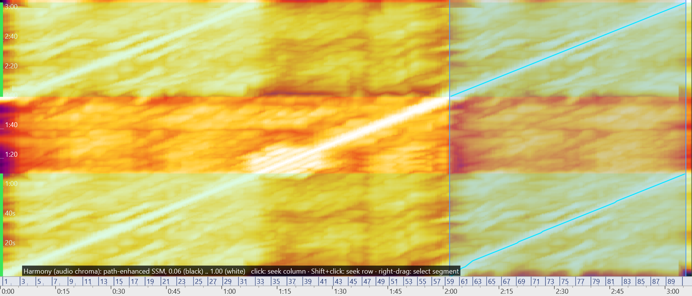
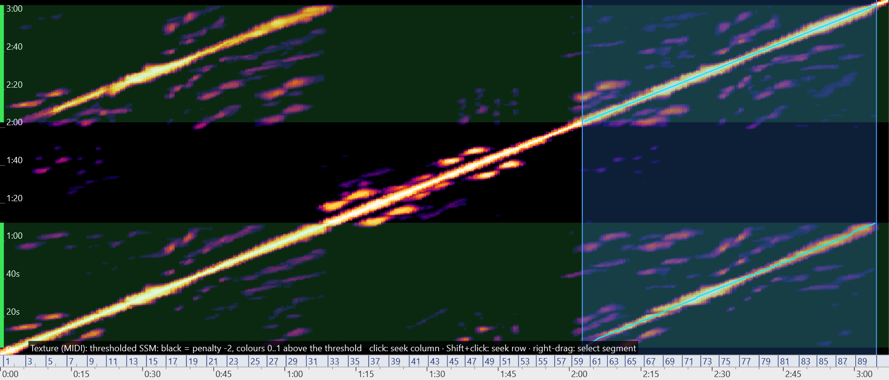

Self-similarity matrix
The question: what comes back, and when?
Take every moment of the piece and compare it with every other moment. Put one copy of the piece along the bottom and one up the side; colour each crossing by how alike the two moments are. That is the whole idea.
- A stripe parallel to the main diagonal: a passage comes back, moment by moment, in the same order.
- A block: the music stays alike for a while, without an order (one harmony, one texture).
- The steepness of a stripe is the relative speed. Parallel to the diagonal: same tempo. Steeper: the passage on the side axis takes longer. Flatter: it goes faster.
 12345678
12345678- The main diagonal. Every moment equals itself. It is always there and says nothing.
- A long bright stripe away from the diagonal. X runs from 0:00 to 1:09 while Y runs from 2:00 to 3:06: the whole first section comes back at 2:00.
- Blue vertical band: the selected segment, 2:01.8 to 3:05.8. At first this is the best thumbnail; right-drag to choose another.
- Green horizontal bands (with a bright green bar at the left edge): the occurrences of the selected segment. Read their times on the Y axis: 0:00-1:10 and 2:02-3:06.
- Cyan line inside the blue band: the alignment. For each occurrence it shows which moment of the selected segment matches which moment of the occurrence.
- The other cyan line lies on the diagonal: the segment matched with itself.
- A patch of short stripes near the diagonal, 1:09 to 1:27: the middle part repeats a short idea of its own several times.
- Black: below the threshold. The middle part (Y 1:10 to 2:00) has nothing in common with the first section.
How to read it, in four steps
- Ignore the main diagonal. Look for other bright lines.
- For one line, drop down to the X axis for one time span, and across to the Y axis for the other. Those two spans are alike.
- Check the steepness: same speed?
- Then check with your ears: click (jumps to the column's time), and Shift+click (jumps to the row's time).
The picture is stretched: the window is wider than tall, so a stripe at the same tempo is parallel to the main diagonal, not at 45 degrees.
Thresholded and enhanced

The Studio works in two steps. First it enhances: it smooths along diagonals, over 6 seconds and five speeds, so that long repeats stand out and accidents fade. Then it thresholds: the strongest 15 percent of the cells stay (re-scaled to 0..1) and all others get a penalty of -2, drawn black. The thumbnail search walks on the thresholded matrix; the penalty makes it avoid the black.
Another aspect, another picture

| Looks like | What it is | How to read and use it |
|---|---|---|
| Bright diagonal, corner to corner | Each moment against itself. Always there. | |
| Other bright stripes | Repetition. Longer and brighter means a longer, closer repeat. | |
| Blue vertical band with blue edges | The selected segment, on the X axis. | |
| Green horizontal bands, bar at the left | The occurrences: where the selected segment is found, on the Y axis. | |
| Cyan lines | The alignment path of each occurrence. A kink is a place where one version hurries or lingers. | |
| Black | Thresholded: below the threshold. Enhanced: the lowest value. | |
| Short white ticks at the left | Time marks of the Y axis. |
Read more
- J. Foote, Visualizing music and audio using self-similarity, ACM Multimedia 1999: where the self-similarity matrix began
- FMP C4S2: self-similarity matrices
- FMP C4S2: synthetic examples, stripes and blocks
- FMP C4S2: path enhancement and thresholding
- FMP C4S2: transposition
- Paulus, Müller and Klapuri, Audio-based music structure analysis, ISMIR 2010 (PDF): repetition, novelty and homogeneity side by side